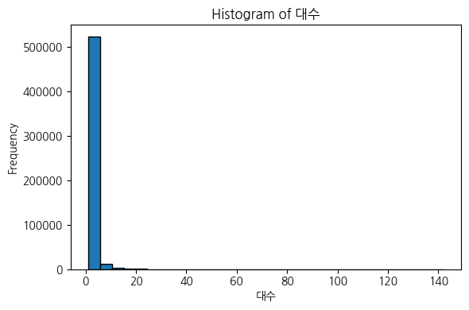

한국승강기안전공단 국내 승강기 보유 현황
한국승강기안전공단에서는 승강기 관련 종합정보전산망을 구축하여 승강기에 대한 종합정보와 사고 등의 각종 이력관리 및 승강기관련 각종 통계자료를 제공하고 있습니다.
https://www.data.go.kr/data/15017366/fileData.do
# 문자형(범주형) 데이터 확인df.describe(include=['object']).T
count
unique
top
freq
지역
540622
252
서울 강남구
13350
건물명
540622
265772
대성빌딩
314
승강기종류
540622
35
승객용
212427
건물용도(대)
540622
31
공동주택
176317
# 수치형 데이터 확인df.describe(include=['int64','float64'])
건물층수
운행층수
정격속도(미터 퍼 세컨드)
대수
count
540622.000000
540622.000000
540601.000000
540622.000000
mean
7.763321
8.102380
1.133568
1.602769
std
7.153593
7.127733
0.473054
2.188103
min
0.000000
0.000000
0.003500
1.000000
25%
4.000000
4.000000
1.000000
1.000000
50%
5.000000
5.000000
1.000000
1.000000
75%
9.000000
10.000000
1.500000
1.000000
max
340.000000
128.000000
30.000000
142.000000
# df.describe(include='number') # 동일 결과 코드
2. EDA
1. (결측치) 각 column의 결측값 비율
# 각 column의 결측값 비율 계산missing_ratio = df.isnull().mean() # 각 column의 결측값 비율 계산 (결측 개수 / 전체 row 수)missing_ratio = missing_ratio.sort_values(ascending=False) # 결측 비율이 높은 순서대로 정렬missing_ratio = missing_ratio.reset_index() # Series → DataFrame 변환 (인덱스 초기화)missing_ratio.columns = ['Column', 'MissingRatio']print(missing_ratio)
# 이상치 비율이 높은 상위 n개 변수만 시각화import seaborn as snsimport matplotlib.pyplot as plt# 이상치 비율 높은 상위 n개 변수만 선택top_n =5top_outlier_cols = outlier_df.head(top_n)['Column']# 박스플롯 시각화plt.figure(figsize=(12, 6))for i, col inenumerate(top_outlier_cols, 1): plt.subplot(1, top_n, i) sns.boxplot(y=df[col]) plt.title(col) plt.tight_layout()plt.show()
각 변수마다 이상치 중에서도 돋보이는 이상치들이 보임
# # 개별 탐색 시 사용 가능한 함수 정의# def plot_box(col):# sns.boxplot(y=df[col])# plt.title(f"Boxplot of {col}")# plt.show()# # 예시 사용: plot_box('Column Name')
def summarize_category(df, column, top_n=None, include_na=True):""" 범주형 변수 요약 (건수 + 비율) Parameters: - df: DataFrame - column: 분석할 열 이름 (문자열) - top_n: 상위 n개만 출력 (None이면 전체) - include_na: NaN 포함 여부 Returns: - summary DataFrame """ counts = df[column].value_counts(dropna=include_na) ratios = df[column].value_counts(normalize=True, dropna=include_na).mul(100).round(2) summary = pd.DataFrame({'건수': counts,'비율(%)': ratios }).reset_index().rename(columns={'index': column})if top_n isnotNone: summary = summary.head(top_n)return summary
summarize_category(df, '지역', top_n=10) # 지역의 NaN은 없음
지역
건수
비율(%)
0
서울 강남구
13350
2.47
1
경기 화성시
11069
2.05
2
경기 평택시
9805
1.81
3
서울 서초구
8127
1.50
4
제주 제주시
7314
1.35
5
서울 송파구
7002
1.30
6
서울 강서구
6482
1.20
7
경기 남양주시
6324
1.17
8
인천 서구
5811
1.07
9
대전 유성구
5700
1.05
추후 활용 가능성..
4. (기술통계) 각 column의 기술통계 (평균값, 최대값, 최솟값, 최빈값, 분위수 등)
# 수치형 변수만 선택numeric_cols = df.select_dtypes(include=['float64', 'int64']).columns# 통계 요약 저장용 리스트stat_list = []for col in numeric_cols: desc = df[col].describe() mode = df[col].mode(dropna=False).values[0] # 최빈값 (여러 개 중 첫 번째 선택) mode_all = df[col].mode(dropna=False).tolist() # 최빈값 리스트 형태로 저장 stat_list.append({'Feature': col,'Count': desc['count'],'Mean': desc['mean'],'Std': desc['std'],'Min': desc['min'],'25%': desc['25%'],'Median (50%)': desc['50%'],'75%': desc['75%'],'Max': desc['max'],'Mode': mode,'Mode_all': mode_all })# DataFrame으로 정리stats_df = pd.DataFrame(stat_list)stats_df
Feature
Count
Mean
Std
Min
25%
Median (50%)
75%
Max
Mode
Mode_all
0
건물층수
540622.0
7.763321
7.153593
0.0000
4.0
5.0
9.0
340.0
4.0
[4]
1
운행층수
540622.0
8.102380
7.127733
0.0000
4.0
5.0
10.0
128.0
4.0
[4.0]
2
정격속도(미터 퍼 세컨드)
540601.0
1.133568
0.473054
0.0035
1.0
1.0
1.5
30.0
1.0
[1.0]
3
대수
540622.0
1.602769
2.188103
1.0000
1.0
1.0
1.0
142.0
1.0
[1]
5. (상관관계) 상관관계 매트릭스
# 수치형 변수 간 상관관계 매트릭스import seaborn as snsimport matplotlib.pyplot as plt# 수치형 변수만 선택numeric_df = df.select_dtypes(include=['float64', 'int64'])# 상관계수 계산corr_matrix = numeric_df.corr()# 시각화plt.figure(figsize=(10, 8))sns.heatmap(corr_matrix, annot=True, cmap='coolwarm', fmt=".2f", square=True)plt.title("Numeric Feature Correlation Matrix")plt.tight_layout()plt.show()
전부 양의 상관관계를 보임
대수는 다른 변수들과 상관관계가 약한 편
6. (시각화) histogram, bar graph, box plot 등
import matplotlib.pyplot as pltnumeric_cols = df.select_dtypes(include=['float64', 'int64']).columns# 전체 수치형 변수에 대해 히스토그램 그리기for col in numeric_cols: plt.figure(figsize=(6, 4)) plt.hist(df[col].dropna(), bins=30, edgecolor='black') plt.title(f'Histogram of {col}') plt.xlabel(col) plt.ylabel('Frequency') plt.tight_layout() plt.show()

bins를 증가시키면
import matplotlib.pyplot as pltnumeric_cols = df.select_dtypes(include=['float64', 'int64']).columns# 전체 수치형 변수에 대해 히스토그램 그리기for col in numeric_cols: plt.figure(figsize=(6, 4)) plt.hist(df[col].dropna(), bins=60, edgecolor='black') plt.title(f'Histogram of {col}') plt.xlabel(col) plt.ylabel('Frequency') plt.tight_layout() plt.show()
# import seaborn as sns# import matplotlib.pyplot as plt# cat_cols = df.select_dtypes(include=['object']).columns# # 전체 범주형 변수에 대해 히스토그램 그리기# for col in cat_cols:# plt.figure(figsize=(6, 4))# ax = sns.countplot(data=df, x=col, order=df[col].value_counts().index, color='salmon')# total = len(df)# for p in ax.patches:# count = int(p.get_height())# percent = 100 * count / total# label = f'{count} ({percent:.1f}%)'# # 텍스트 위치: 막대 안쪽 상단 (중앙 정렬)# ax.annotate(label,# (p.get_x() + p.get_width() / 2., p.get_height() * 0.95),# ha='center', va='top',# fontsize=9, color='white', weight='bold')# plt.title(f'Bar Graph of {col} (Count + Ratio)')# plt.xticks(rotation=45)# plt.tight_layout()# plt.show()
의미가 없어서 실행 X (시간도 오래 걸림)
# # 특정 변수에 따른 수치형 변수 분포 비교# for col in numeric_cols:# plt.figure(figsize=(6, 4))# sns.boxplot(data=df, x='###Column Name###', y=col)# plt.title(f'Boxplot of {col} by ###Column Name###')# plt.tight_layout()# plt.show()
의미가 없어서 실행 X
# 특정 변수 중 특정 값들에 따른 수치형 변수들 분포 비교import seaborn as snsimport matplotlib.pyplot as plt# 파라미터 설정group_col ='지역'# 비교할 범주형 변수target_values = ['서울 강남구', '경기 화성시', '경기 평택시', '서울 서초구', '제주 제주시'] # 특정 값들numeric_cols = ['건물층수', '운행층수', '정격속도(미터 퍼 세컨드)', '대수'] # 수치형 변수 목록# 필터링된 데이터프레임filtered_df = df[df[group_col].isin(target_values)]# 반복해서 boxplot 그리기for col in numeric_cols: plt.figure(figsize=(6, 4)) sns.boxplot(data=filtered_df, x=group_col, y=col) plt.title(f'Boxplot of {col} by {group_col} ({", ".join(target_values)})') plt.tight_layout() plt.show()
7. (교차표) 범주형 변수 간의 관계
# '지역'에 따른 '승강기종류' 비율print("=== 지역 vs 승강기종류 ===")ratio = df.groupby('지역')['승강기종류'].value_counts(normalize=True).unstack()ratio.head()